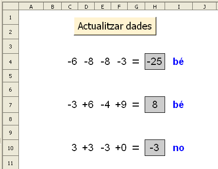

Presentació gràfica de l'activitat

Funcions que es fan servir en aquesta activitat
Objectiu de l'activitat
Càlcul mental amb números enters.
Desenvolupament de l'activitat
1. Obrir el fitxer M5 i afegir un nou full amb el nom d'M5P3 enters.
2. Fer que el rang C4:I10 tingui un format (atributs de la cel·la) semblant al gràfic de la presentació de l'activitat.
3. Escriure a la cel·la K4: =SI($A$1=0;ALEATENTRE(-9;9))
4. Copiar la cel·la K4 i enganxar-la a les cel·les del rang L4:N4
5. Escriure a la cel·la O4:=SUMA(K4:N4)
6. Escriure a la cel·la C4: =SI(MIG(K4;1;1)="-";K4;K4)
13. Crear un botó de prémer de Controls de formulari i assignar-li la macro feta anteriorment.
14. Validar la cel·la A1 per al valor 0.
15. Protegir les cel·les que convingui.
16. Ocultar les cel·les que convingui.
17. Comprovar que l'activitat funcioni correctament.
18. Desar el fitxer M5.